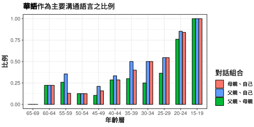

上次更新：2018-06-12
前言
此網頁是為了臺灣地區語言使用調查這份問卷而設計的。臺灣地區語言使用調查是為了解臺灣各語言的使用情況，特別是華語(國語)以外的弱勢語言；這個網頁則是為了即時將問卷分析結果和大家分享，希望藉此引起大家對臺灣多語社會以及弱勢語言的關注。
接下來將透過幾段文字和幾張圖片，描述臺灣語言的現況1，並會聚焦在跨年齡層以及跨世代的語言流失現象。
臺灣語言現況

我們可以根據問卷資料繪製出動態語言地圖，顯示出臺灣各地2，各語言在不同年齡層之間消長的情況。
一地區中，懂某語言的人口比例對於該語言在當地的延續有相當的重要性：
若僅有少數比例的人口懂某語言，那該語言作為溝通媒介的效率即不佳，只能用來與少數人溝通；此時，若這些少數人口同時懂“其它有更高使用比例的語言”(即雙語或多語人口)，那麼其使用後者的可能性會上升，因而更進一步加速弱勢語言消失的速度。
臺灣相當符合上述情況。成長於多語社會之中，多數臺灣人會一種以上的語言(如“國語-臺語”、“國語-客語”、“國語-原住民族語-臺語”等)，且絕大多數的人皆會講華語(國語)。在此情形下，臺灣的各語言間形成明顯強勢與弱勢的地位。
語言金字塔
除了人口比例之外，語言能力也是一項重要指標。根據一語言在不同年齡層的口說能力，我們能夠繪製出語言金字塔，快速看出一語言的“年齡結構”：
| 語言活力 | 金字塔形狀 |
|---|---|
| 語言正在委縮、消失 | 倒金字塔 |
| 語言正在成長 | 正金字塔 |
| 語言使用穩定 | 直筒狀 |
每一格金字塔動畫圖代表著一個語族3各年齡層的語言(口說)能力。若想了解更多關於語言金字塔的資訊，請點選金字塔動畫圖下方之語言金字塔按鈕。

語言傳承
年齡層上的語言能力差異可由世代間的語言傳承情況加以理解。家是小孩學會講話的地方，而父母(或主要扶養人)通常是子女學習語言的對象。比較子女和父母的語言能力，能讓我們以較細微、直觀的方式理解語言的活力。
下圖顯示子女(問卷填寫者)與父、母語言能力的差異：
\[子女語言能力平均 - 父親或母親語言能力平均\] 因此在下圖中，若點在黑橫線以上代表子女語言能力較父/母佳；若點在黑橫線以下代表子女語言能力較父/母差。

方言危機
語言流失中的一個明顯跡象可見於世代之間使用語言的差異。透過下圖，我們能比較前一個世代(父母)和目前世代(問卷填答者)使用方言的情形，也能看出這個差異隨時間的改變：

語言為何流失？
從跨年齡層與跨世代皆可看出臺灣語言流失的情況，然而造成語言流失的原因為何？
臺灣的語言流失大致可歸因於幾種不互斥的因素：
參考資料
Kovács, Á. M., & Mehler, J. (2009a). Cognitive gains in 7-month-old bilingual infants. Proceedings of the National Academy of Sciences, 106(16), 6556. https://doi.org/10.1073/pnas.0811323106
Kovács, Á. M., & Mehler, J. (2009b). Flexible Learning of Multiple Speech Structures in Bilingual Infants. Science, 325(5940), 611. https://doi.org/10.1126/science.1173947
Leung, A. K.-y., Maddux, W. W., Galinsky, A. D., & Chiu, C.-y. (2008). Multicultural experience enhances creativity: The when and how. American Psychologist, 63(3), 169–181. https://doi.org/10.1037/0003-066X.63.3.169
Stanford, J. N. (2008). Child dialect acquisition: New perspectives on parent/peer influence1. Journal of Sociolinguistics, 12(5), 567–596. https://doi.org/10.1111/j.1467-9841.2008.00383.x
黃宣範. (1993). 語言、社會與族羣意識. 臺北市: 文鶴.